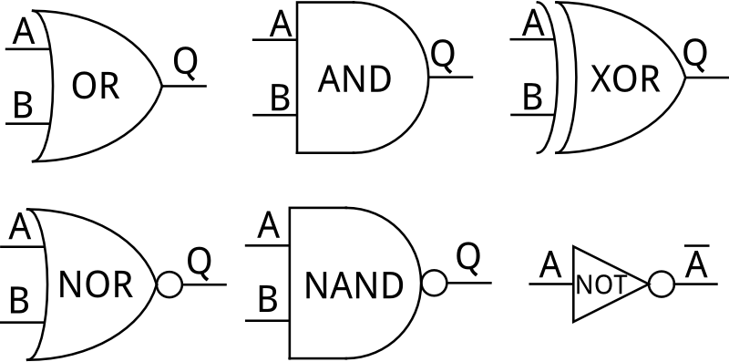
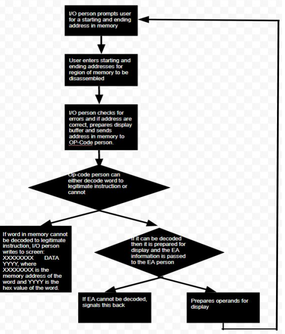

Here I was thinking Operating Systems was low level. In CSS 422 Hardware & Computer Organization, I discovered the magic of gates, processors, instruction set architures and more. I obtained an all-new perspective
on software development in this course.
From the course catalog:
An introduction to the architecture, operation, and organization of a modern computing machine. Topics covered include basic logic operations, state-machines, register models, memory organization, peripherals, and system issues. Assembly language taught in order to understand the instruction set architecture and memory model of the computer.
Other than building a PC, this was my first foray into what lies below software. I was excited at the opportunity to discover the low level and reasonably complex details for digital logic and processing. I quickly realized how deep this rabbit hole goes, and if the multiple textbooks are any indication, there is simply too much for one blog post.
To keep things concise, I'll write about some foundation and my favorite takeaways.
Right away we jumped into digital logic. A wafer of silicon that makes some logical circuit is composed of gates, little units that can conduct bitwise logical operations with HI (1) or LO (0) signals and (for now) the same for outputs.
Here are some examples:

https://learn.sparkfun.com/tutorials/digital-logic
These are a lot like the typical boolean operations we would see in high level languages like Java or C++, but simply in a hardware representation dealing with "hi" and "lo" voltages. Typically there are two inputs and the gate will output one signal, Q, as the result of the logical operation.
Of course, these can be chained such that any output Q can serve as any input A or B. This is the basis for all digital circuits.
Given this is hardware level and we are dealing with electrical signals rather than concrete values in software, I immediately began wondering what constitutes a HI or LO. I learned that it's a matter of voltage, such that there is a threshold where a signal is classified. Signals are
expect to transition from one state to another as fast as possible.
Half of the course focused on this area of hardware, in the strict sense of the word, exploring digital logic in increasing complexity and bit manipulation like doing arithmetic. This slowly transitioned into software applications, or hardware arrangements and activities that exist under the hood of software routines.
Then I met the Motorola 68000.
This is the hardware engineer's programming language. There are no conveniences or object-oriented-ness in the Java or C++ sense. Rather, we a simple (or is complicated?) arrangment of registers that hold 1's and 0's with a vast instruction set that can move or manipulate those values. We also have access to a range of memory or RAM.
Here's the data arrangment of the 68000:
http://compsci02.snc.edu/cs225/2005/TI%20calculators/Website/processor.html
DATA registers hold literal values like numbers or ASCII strings, ADDRESS registers hold memory locations that point somewhere in the 68000 address space.
There is a special address register, A7, which points at the top of the stack. This stack is functionally the same as any stack, but is managed manually in memory. It grows down, so every push onto it requires a manual decrement of the A7 pointer. PC is the program counter, or a pointer to the next
instruction to be executed.
Lastly, we have CCR, or special register that has one bit per condition (things like negative, zero, etc.) that flip about after each instruction. This makes it clear to the programmer what happened to the machine state after the last instruciton was executed, and from there decisions can be made.
Every instruction in a 68K source file as a memory location, which is what PC would be set to, and of course the instruction itself. This instruction has a structure, as 1's and 0's, and these are divided up into sections that hold particular meaning given the context. The 68000 Programmer's Manual describes these structures.
One of the most common instructions, MOVE, for example:
Motorola 68000 Programmer's Manual
This is a typical page for an instruction out of the manual. We can see how CCR is affected, and how the bits are laid out.
The assembler will parse those bits, at the memory location of the instruction, such that the appropriate registers and values are retrieved/set.
Our final project was the 68K Disassembler: a decompiler for 68K, written in 68K!
The idea was to take advantage of the inherent bit manipulation features of 68K to play with a data set that has raw instructions loaded (in bit form) to be pulled apart and interpeted as ASCII source for readability.
Our basic design:

We used the following chart for a bird's eye of the bit structure for all of 68K's instructions and addressing modes, though only a subset were required for the project:
I figure this is just about the best way to really drive hardware concepts home, given we went from being introduced to a new language only to develop a decompiler for it weeks later.
Despite the challenge, I became more comfortable taking on complex problems and working through them. There were a number of bugs an issues, from instructions not parsing properly to strange output
here and there. But that's part of the game.
Next stop: 432 Computer Networking and 475 Databases!
A.